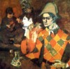
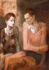
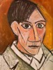
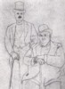

OBRA (Juventud-1973)
La obra de Picasso se puede dividir en seis periodos: Joven Picasso (1881-1901), Epoca Azul (1901-1904), época Rosa (1904-1907), Cubismo (1907-1916), Neoclásico (1916-1924) y el propiamente denominado Estilo Picasso.
JOVEN PICASSO

Pablo Picasso comienza a esbozar sus primeros dibujos bajo la dirección de su padre José Ruiz, profesor de dibujo en la Escuela de Artes y Oficios "San Telmo" y Conservador del Museo Municipal de Málaga; gracias el divna este trabajo consigue un puesto de profesor, primero en La Coruña y mas adelante en Barcelona, ciudad en la que Picasso arranca su carrera artística, y donde traba amistad con Carles Casagemas, con quien frecuenta la taberna "Els Quatre Gats", el principal lugar de reunión de los pintores modernistas, cuya pintura influirá fuertemente a Picasso, lo que reflejará en las obras de esta época. De 1895 a 1900 residió en Barcelona, estudió en la Llotja y se relacionó con el grupo Els Quatre Gats. Tras un primer viaje a París, se trasladó a Madrid para estudiar en la Real Academia de Bellas Artes de San Fernando, y en 1904 se estableció definitivamente en la capital.
ÉPOCA AZUL
En el año 1901 vuelve a Madrid aconsejado por su padre, y fue durante aquellos días cuando su amigo Casagemas se suicida en un café de Paris. Este hecho causa una gran impresión a Picasso, y según el propio artista, provocó el comienzo de la época azul, aunque antes de las obras en homenaje a la muerte de Casagemas podemos observar ya en algunas obras ciertos matices que caracterizan el periodo azul. Tras la muerte de Carles Casagemas, Pablo Picasso realiza una serie de cuadros en recuerdo a su amigo que, según el propio artistalosdosadolescentes, son el principio de la época azul.También repite el motivo de homenaje a Casagemas en una de las mejores obras de esta etapa, "La vida", en la cual aparece como la figura principal en lo que iba a ser un autorretrato del malagueño, tal y como podemos observar en los bocetos previos a este cuadro. Este es el primer periodo de madurez del artista, aunque no hay ninguna referencia posterior dentro de su propia obra a esta etapa, a diferencia de por ejemplo la época rosa, cuyos temas fueron mas o menos tratados a lo largo de sus prolíficos años de carrera; no obstante en estos años pintó sus primeras obras maestras, como "La celestina", "Pobres a orillas del mar" o "El viejo guitarrista ciego" y "El viejo judío".
ÉPOCA ROSA
Pablo Picasso se instala definitivamente en París, en el estudio del "Bateau-Lavoir" en la calle Ravignan 13 (hasta 1909) de Montmartre. Es un asiduo del "Lapin Agile" y el circo Médrano, que le inspiraría temas de circo y saltimbanquis, y que sería el final de la época azul y el comienzo de su quizás mal llamada época rosa, que destaca por sus colores pastel y cálidos, de líneas suaves y delicadas, y figuras de proporciones "alargadas" próximas a su admirado Greco. Las obras mas representativas de esta época son "Acróbata con balón o muchacha con balón", "La familia de saltimbanquis", "Acróbata y joven arlequín" y "Familia de acróbatas con un mono".sm 00024acr Durante el año 1905 pintaría alegorías circenses. Viaja a Barcelona y a Gosol, en Lleida, donde pinta escenas de baños y desnudos vistos desde su exquisito dominio del rojo, y en verano a Schoorl, en Holanda, donde realiza algunas obras, como "Las tres holandesas", una versión personal del tema clásico de las tres gracias. Mas adelante, en el Museo Louvre, Picassm 00046mujerdesnudadefrenteso asiste a una exposición de esculturas ibéricas que le impresionan, como "La dama de Elche", recordándole aquellas figuras que observó con interés en las iglesias de Gosol. Esto le inspiraría una serie de cuadros con personajes que reúnen ciertas características con estas obras de arte que admiraría, y que rompen con su estilo anterior y son el principio del cubismo pero sin pertenecer a él, siendo esta etapa una etapa "con vida propia", sin pertenecer a ningún estilo reconocido; años mas tarde retoma lo que hubiera sido el transcurrir lógico de ese estilo, en su época "neoclásica". Podemos observar en estos cuadros algunos rasgos faciales del propio artista, incluso entre las figuras femeninas, y que se apreciarían con más facilidad, en comparación, con los autorretratos de ésta serie.
EL CUBISMO
Acontecimientos de esta época, como una visita al Museo de Etnología, donde Picasso se siente fuertemente impresionado por las esculturas africanas expuestas, y la presentación de George Braque hecha por Apollinaire, quien es vecino del Bateau-Lavoir, son lo que provoca el nacimiento del mayor golpe de estado a la historia de las artes desde Giotto y los renacentistas: el cubismo. Todo parte del trabajo en equipo de Braque y Picasso, pues el cubismo no es creación exclusiva de ninguno de ellos, a pesar de que "Les demoiselles d'Avignon", pintada en el verano de ese año, sea considerada la primera obra cubista. horta de ebro Picasso, meses antes y tras su visita a Gosol, comenzó una serie de cuadros del mismo corte que las figuras que admiró en aquel pueblo catalán, y que a continuación vendrían a ser un camino hacia el cubismo; justo entonces fue cuando Braque comenzó sus propios esbozos cubistas. La proximidad entre los dos, pues vivían en el mismo edificio, les sirvió para intercambiar sus ideas revolucionarias. El cubismo en Picasso consta de varias fases; la primera es el de "Las señoritas de Aviñón", que bebe del primitivismo y el arte negro africano, pasando a continuación a una pintura con cierta influencia por parte de Cezanne, como por ejemplo "Cabeza de sm 000023naturalezamuertamujer con montañas de fondo" o "Tres mujeres". Hacia 1910 Braque y Picasso comienzan el "cubismo analitico", el más complejo y abstracto de entre todos los periodos del cubismo; la pintura de Braque y Picasso es entonces indistinguible, y lo sería tambien en las diferentes tendencias cubistas, como con el cubismo sintético, que son los primeros collages en pintura. "Naturaleza muerta con silla de rejilla", hecho con hule encerado que imita un trabajo con paja entrelazada es el principio de este estilo: montajes de recortes de periódicos, etiquetas, anuncios con carboncillo sobre ellos e imitaciones de madera son las caracteristicas de este periodo. La última fase cubista en Picasso es la "puntillista", con la que rompe gradualmente con el cubismo.
NEOCLÁSICO
Como se acaba de comentar, Picasso renuncia gradualmente al cubismo, lo que supondría cierta perplejidad entre los críticos, que veían en él un traidor a sus ideas cubistas revolucionarias por una pintura mas "convencional". Lo cierto es que en estos años encontrará diversos lenguajes, muchas veces sin ninguna relación entre ellos, aunque si con estilos anteriores, como el propio cubismo y la pism 0000022retratodesergntura que le llevó a este, que retoma en sus cuadros "gigantistas", los más delicados de esta época. Realiza diversos telones y vestuarios para ballets y óperas, como "Parade" de Erik Satie o "El sombrero de tres picos" de Manuel de Falla. Conoce a su primera mujer, la bailarina Olga Koklowa, y le introduce dentro del ambiente del espectáculo, y entra en contacto y se relaciona con la "alta sociedad"; cambia su estilo de vida, y es criticado por sus amigos. De alguna manera esto pudo influir en las formas "preciosistas y amables" de su pintura, como en "Los enamorados", "Retrato de Olga pensativa" o "Paul vestido de Pierrot". Aunque estos años supongan una ruptura respecto a la progresión vanguardista que siempre tuvo su pintura, lo cierto es que telas como "La flauta de Pan", "Dos mujeres corriendo en la playa", "Familia a orillas de la mar" o "Tres mujeres en la fuente" son verdaderamente exquisitas obras maestras que influyeron a toda una generación de pintores que vivieron en la década de la explosión dadaísta de Duchamp y surrealista de Bretón, y que hicieron una renovación de la pintura figurativa del siglo XX.